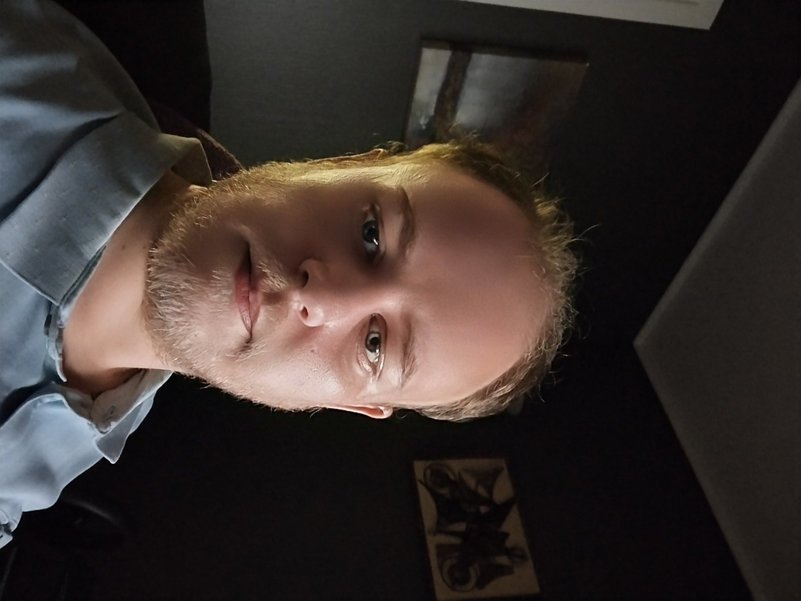

About me
i am now 33 years old, and have now finished a 2 year course of frontend development at Noroff fagskole, and i am now looking for a job as a frontend developer. I have worked most of my life as a taxi driver and a car rescuer. In recent years i have been wanting to start a new career, a career where i can achieve more and develop skills.
Contact info:
volvo240jakobsen@gmail.com